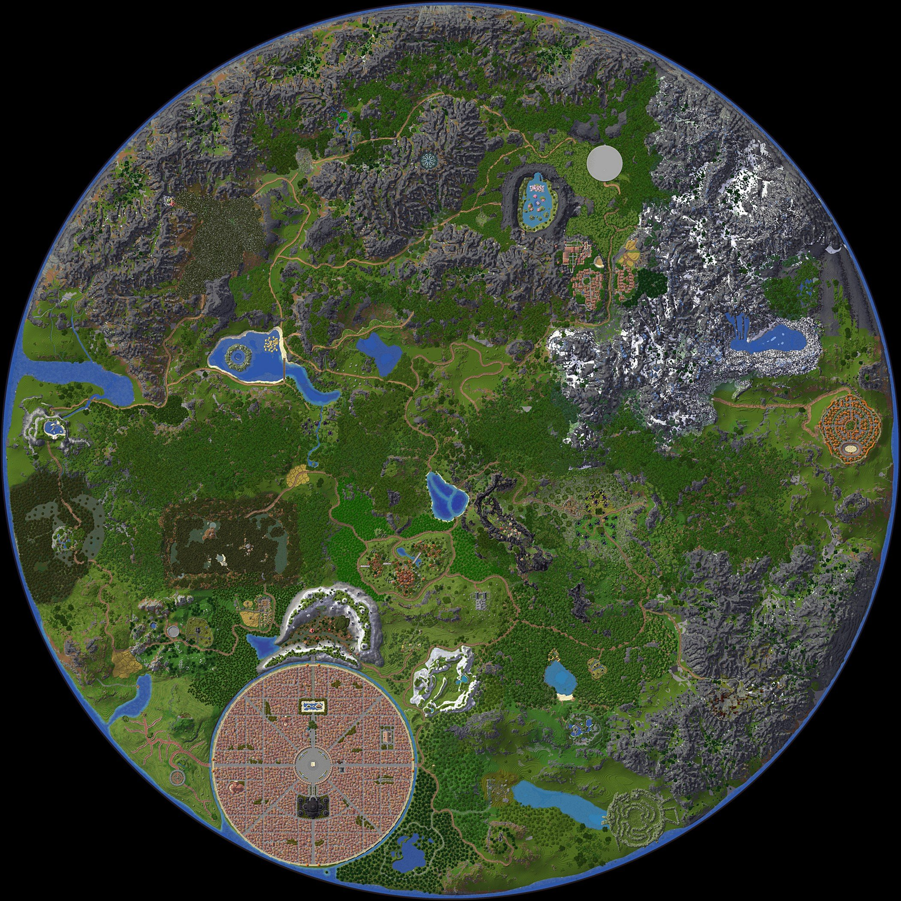

SAO Minecraft
阿爾戈的攻略本
1F
▾
跳到第
層
前往
已開放
即將開放（wiki 已有資料）
未開放
地圖
圖鑑
任務
配方
地下城
職業／技能
職業
世界王
協作區
ⓘ
關於本站
▾
介紹及資訊
更新紀錄
網頁導覽
怪物
裝備
道具
素材
NPC

這一層目前沒有地圖
wiki 還沒有這一層的地圖。怪物、物品資料可以在其他分頁查詢；右側列出圖鑑上的區域。
清除搜尋
篩選 ▾
← 回到第 1 層
篩選
全部顯示
✕
NPC 類別
全選
全不選
怪物縮圖右下角的點：
主動攻擊
中立
被動
首領頭像左下角的洞窟：重生點在地下，要從地下城或洞窟入口走下去
NPC 類別
X — · Z —
✕
+
−
⤢
類型
區域
排序
圖鑑編號
難度（高→低）
名稱
等級（低→高）
怪物
分類
稀有度
條件
只看任務需要的
只看怪物會掉的
只看這一層有取得資料的
排序
名稱
稀有度（高→低）
掉落來源最多
任務需求量最多
怪物掉的材料和採集物（作物、礦物、木材、漁獲），列出掉落率、採集點和任務需求。預設列出全部（含官網的漁獲、礦物等，本站還沒有取得地點的也列）；勾「只看這一層有取得資料的」只留這一層有掉落、採集點或任務的。怪物掉的裝備、食物、藥水在「裝備」「道具」。
素材
類型
區域
這一層的 NPC，依所在區域分組（離最近的城鎮、傳送點或地標 400 格以內；更遠的列在「野外」）。點了看位置、可以製作／販售的東西；收購商另外列出
會回收的物品和收購價
（取自遊戲物品說明裡的「Bought back by…」「由…回收」，只列出看過的，不是完整清單）。
NPC
類型
村鎮
排序
依村鎮
經驗值（高→低）
珂爾（高→低）
主線依劇情順序排列。圓圈數字是遊戲任務追蹤上的編號（虛線圈是依順序推算的，灰點是編號還沒確認）。任務名稱和說明取自遊戲中文版的任務日誌；步驟順序和座標取自參考互動地圖（DelayedCode），步驟文字是本站改寫。標「約」的是大約位置。按「在地圖上看路線」會在地圖上畫出步驟順序。破碎的地下世界（Fractured Underworld）裡的主線不列在這裡。
任務需求與座標來自 wiki 支線任務表。標有
推斷
的物品是依任務原文的簡寫推斷，原文可在詳細資料裡看到。
支線任務
部位
細分
職業
稀有度
等級
～
效果
排序
等級（低→高）
等級（高→低）
稀有度（高→低）
名稱
資料取自官網物品圖鑑（saominecraft.com/wiki，2026-10-31），名稱和描述是官方的法文原文。圖示是官方圖片，或官網 3D 模型的截圖。官網圖鑑沒有寫取得方式和合成材料，之後靠玩家回報補上。
裝備
分類
細分
種類
稀有度
排序
名稱
稀有度（高→低）
等級（低→高）
官網物品圖鑑裡拿來用的東西（消耗品、藥水、水晶、符文、強化藥、工具、鑰匙、活動道具），名稱和描述是官方法文原文；怪物會掉的，資料裡直接列掉落率和取得地點。材料和採集物在「素材」。
道具
分類
在哪裡做
排序
依 NPC
等級（低→高）
名稱
材料、數量、費用來自玩家的遊戲截圖（標「遊戲截圖」）和參考互動地圖的資料。參考地圖的鯊魚飾品配方和遊戲截圖完全相同。武器、防具目前只有起始商人賣的新手裝備，武器鐵匠和防具鐵匠的配方還沒有資料，歡迎在遊戲裡打開製作選單、按 F2 截圖回報。
配方
先建立的分頁，目前只列地下城名稱。進入條件、攻略和掉落會陸續補上；點名稱可以看入口位置和裡面的怪物。
地下城
職業介紹、角色定位、難度、能力星等、專精和技能名稱取自
wiki 的 Classes 頁
，說明是本站的中文改寫。起始屬性、每級成長和天賦樹數值取自參考互動地圖的配裝計算器資料。可用武器依官方物品圖鑑的「職業限制」統計。
除了戰士以外，wiki 上各職業的技能圖示都是佔位圖，那份技能清單可能是開服前的預定內容，和遊戲實際不同。有遊戲裡的技能畫面截圖，歡迎到「協作區」選回報種類「技能」回報。
職業
拖曳標題移動・拉右下角調整大小
✕
滾輪縮放・拖曳移動・拉右下角調整大小
＋
－
⤢
✕